Dose-Response Assay Compilation
Last updated: 2021-06-02
Checks: 6 1
Knit directory: toxin_dose_responses/
This reproducible R Markdown analysis was created with workflowr (version 1.6.2). The Checks tab describes the reproducibility checks that were applied when the results were created. The Past versions tab lists the development history.
Great! Since the R Markdown file has been committed to the Git repository, you know the exact version of the code that produced these results.
Great job! The global environment was empty. Objects defined in the global environment can affect the analysis in your R Markdown file in unknown ways. For reproduciblity it’s best to always run the code in an empty environment.
The command set.seed(20210305) was run prior to running the code in the R Markdown file. Setting a seed ensures that any results that rely on randomness, e.g. subsampling or permutations, are reproducible.
Great job! Recording the operating system, R version, and package versions is critical for reproducibility.
Nice! There were no cached chunks for this analysis, so you can be confident that you successfully produced the results during this run.
Using absolute paths to the files within your workflowr project makes it difficult for you and others to run your code on a different machine. Change the absolute path(s) below to the suggested relative path(s) to make your code more reproducible.
| absolute | relative |
|---|---|
| ~/Documents/projects/toxin_dose_responses/ | . |
Great! You are using Git for version control. Tracking code development and connecting the code version to the results is critical for reproducibility.
The results in this page were generated with repository version ab92e85. See the Past versions tab to see a history of the changes made to the R Markdown and HTML files.
Note that you need to be careful to ensure that all relevant files for the analysis have been committed to Git prior to generating the results (you can use wflow_publish or wflow_git_commit). workflowr only checks the R Markdown file, but you know if there are other scripts or data files that it depends on. Below is the status of the Git repository when the results were generated:
Ignored files:
Ignored: .DS_Store
Ignored: .Rhistory
Ignored: analysis/.DS_Store
Ignored: analysis/figure/
Ignored: output/.DS_Store
Untracked files:
Untracked: Manganese_diagnostic_2000_1366_1818.png
Untracked: code/toxin.geno.matrix.sh
Untracked: data/drugclasses.csv
Untracked: data/tx.doses.mappings.numbers
Untracked: output/2,4-DE10plot.png
Untracked: output/2,4-D_EC.plot.png
Untracked: output/2,4-D_EC10.csv
Untracked: output/2,4-D_EC50.csv
Untracked: output/2,4-D_EC90.csv
Untracked: output/2,4-D_EC90.plot.png
Untracked: output/2,4-D_H2.rank.plot.png
Untracked: output/3model.heatmap.png
Untracked: output/4model.heatmap.png
Untracked: output/AldicarbE10plot.png
Untracked: output/Aldicarb_EC.plot.png
Untracked: output/Aldicarb_EC10.csv
Untracked: output/Aldicarb_EC50.csv
Untracked: output/Aldicarb_EC90.csv
Untracked: output/Aldicarb_EC90.plot.png
Untracked: output/Aldicarb_H2.rank.plot.png
Untracked: output/Arsenic trioxideE10plot.png
Untracked: output/Arsenic trioxide_EC.plot.png
Untracked: output/Arsenic trioxide_EC10.csv
Untracked: output/Arsenic trioxide_EC90.plot.png
Untracked: output/Arsenic trioxide_H2.rank.plot.png
Untracked: output/AtrazineE10plot.png
Untracked: output/Atrazine_EC.plot.png
Untracked: output/Atrazine_EC10.csv
Untracked: output/Atrazine_EC50.csv
Untracked: output/Atrazine_EC90.plot.png
Untracked: output/Atrazine_H2.rank.plot.png
Untracked: output/Atrazine_MDHD.junk.png
Untracked: output/Cadmium dichlorideE10plot.png
Untracked: output/Cadmium dichloride_EC.plot.png
Untracked: output/Cadmium dichloride_EC10.csv
Untracked: output/Cadmium dichloride_EC50.csv
Untracked: output/Cadmium dichloride_EC90.csv
Untracked: output/Cadmium dichloride_EC90.plot.png
Untracked: output/Cadmium dichloride_H2.rank.plot.png
Untracked: output/Cadmium dichloride_MDHD.junk.png
Untracked: output/CarbarylE10plot.png
Untracked: output/Carbaryl_EC.plot.png
Untracked: output/Carbaryl_EC10.csv
Untracked: output/Carbaryl_EC50.csv
Untracked: output/Carbaryl_EC90.csv
Untracked: output/Carbaryl_EC90.plot.png
Untracked: output/Carbaryl_H2.rank.plot.png
Untracked: output/CarboxinE10plot.png
Untracked: output/Carboxin_EC.plot.png
Untracked: output/Carboxin_EC10.csv
Untracked: output/Carboxin_EC50.csv
Untracked: output/Carboxin_EC90.csv
Untracked: output/Carboxin_EC90.plot.png
Untracked: output/Carboxin_H2.rank.plot.png
Untracked: output/ChlorfenapyrE10plot.png
Untracked: output/Chlorfenapyr_EC.plot.png
Untracked: output/Chlorfenapyr_EC10.csv
Untracked: output/Chlorfenapyr_EC50.csv
Untracked: output/Chlorfenapyr_EC90.csv
Untracked: output/Chlorfenapyr_EC90.plot.png
Untracked: output/Chlorfenapyr_H2.rank.plot.png
Untracked: output/ChlorothalonilE10plot.png
Untracked: output/Chlorothalonil_EC.plot.png
Untracked: output/Chlorothalonil_EC10.csv
Untracked: output/Chlorothalonil_EC50.csv
Untracked: output/Chlorothalonil_EC90.csv
Untracked: output/Chlorothalonil_EC90.plot.png
Untracked: output/Chlorothalonil_H2.rank.plot.png
Untracked: output/ChlorpyrifosE10plot.png
Untracked: output/Chlorpyrifos_EC.plot.png
Untracked: output/Chlorpyrifos_EC10.csv
Untracked: output/Chlorpyrifos_EC50.csv
Untracked: output/Chlorpyrifos_EC90.csv
Untracked: output/Chlorpyrifos_EC90.plot.png
Untracked: output/Chlorpyrifos_H2.rank.plot.png
Untracked: output/Copper(II) chlorideE10plot.png
Untracked: output/Copper(II) chloride_EC.plot.png
Untracked: output/Copper(II) chloride_EC10.csv
Untracked: output/Copper(II) chloride_EC50.csv
Untracked: output/Copper(II) chloride_EC90.csv
Untracked: output/Copper(II) chloride_EC90.plot.png
Untracked: output/Copper(II) chloride_H2.rank.plot.png
Untracked: output/Deltamethrin_EC.plot.png
Untracked: output/Deltamethrin_EC10.csv
Untracked: output/Deltamethrin_EC50.csv
Untracked: output/Deltamethrin_EC90.csv
Untracked: output/Deltamethrin_EC90.plot.png
Untracked: output/Deltamethrin_H2.rank.plot.png
Untracked: output/EC10.strain.comp.Carbamate Insecticide.png
Untracked: output/EC10.strain.comp.Flame Retardant.png
Untracked: output/EC10.strain.comp.Fungicide.png
Untracked: output/EC10.strain.comp.Heavy Metal.png
Untracked: output/EC10.strain.comp.Herbicide.png
Untracked: output/EC10.strain.comp.Organophosphate insecticide.png
Untracked: output/EC10.strain.comp.Pro-insecticide.png
Untracked: output/EC10.strain.comp.Synthetic Pyrethroid Insecticide.png
Untracked: output/EC10.strain.comp.png
Untracked: output/EC10.survey.png
Untracked: output/EC90.strain.comp.Carbamate Insecticide.png
Untracked: output/EC90.strain.comp.Flame Retardant.png
Untracked: output/EC90.strain.comp.Fungicide.png
Untracked: output/EC90.strain.comp.Heavy Metal.png
Untracked: output/EC90.strain.comp.Herbicide.png
Untracked: output/EC90.strain.comp.Organophosphate insecticide.png
Untracked: output/EC90.strain.comp.Pro-insecticide.png
Untracked: output/EC90.strain.comp.Synthetic Pyrethroid Insecticide.png
Untracked: output/H2.plot.20210306.png
Untracked: output/H2.plot.20210308.png
Untracked: output/H2.plot.20210314.png
Untracked: output/Lead(II) nitrateE10plot.png
Untracked: output/Lead(II) nitrate_EC.plot.png
Untracked: output/Lead(II) nitrate_EC10.csv
Untracked: output/Lead(II) nitrate_EC90.plot.png
Untracked: output/Lead(II) nitrate_H2.rank.plot.png
Untracked: output/MalathionE10plot.png
Untracked: output/Malathion_EC.plot.png
Untracked: output/Malathion_EC10.csv
Untracked: output/Malathion_EC50.csv
Untracked: output/Malathion_EC90.csv
Untracked: output/Malathion_EC90.plot.png
Untracked: output/Malathion_H2.rank.plot.png
Untracked: output/MancozebE10plot.png
Untracked: output/Mancozeb_EC.plot.png
Untracked: output/Mancozeb_EC10.csv
Untracked: output/Mancozeb_EC50.csv
Untracked: output/Mancozeb_EC90.csv
Untracked: output/Mancozeb_EC90.plot.png
Untracked: output/Mancozeb_H2.rank.plot.png
Untracked: output/Manganese dichlorideE10plot.png
Untracked: output/Manganese dichloride_EC.plot.png
Untracked: output/Manganese dichloride_EC10.csv
Untracked: output/Manganese dichloride_EC50.csv
Untracked: output/Manganese dichloride_EC90.csv
Untracked: output/Manganese dichloride_EC90.plot.png
Untracked: output/Manganese dichloride_H2.rank.plot.png
Untracked: output/MethomylE10plot.png
Untracked: output/Methomyl_EC.plot.png
Untracked: output/Methomyl_EC10.csv
Untracked: output/Methomyl_EC50.csv
Untracked: output/Methomyl_EC90.csv
Untracked: output/Methomyl_EC90.plot.png
Untracked: output/Methomyl_H2.rank.plot.png
Untracked: output/Methylmercury dichlorideE10plot.png
Untracked: output/Methylmercury dichloride_EC.plot.png
Untracked: output/Methylmercury dichloride_EC10.csv
Untracked: output/Methylmercury dichloride_EC50.csv
Untracked: output/Methylmercury dichloride_EC90.csv
Untracked: output/Methylmercury dichloride_EC90.plot.png
Untracked: output/Methylmercury dichloride_H2.rank.plot.png
Untracked: output/Nickel dichlorideE10plot.png
Untracked: output/Nickel dichloride_EC.plot.png
Untracked: output/Nickel dichloride_EC10.csv
Untracked: output/Nickel dichloride_EC50.csv
Untracked: output/Nickel dichloride_EC90.csv
Untracked: output/Nickel dichloride_EC90.plot.png
Untracked: output/Nickel dichloride_H2.rank.plot.png
Untracked: output/ParaquatE10plot.png
Untracked: output/Paraquat_EC.plot.png
Untracked: output/Paraquat_EC10.csv
Untracked: output/Paraquat_EC50.csv
Untracked: output/Paraquat_EC90.csv
Untracked: output/Paraquat_EC90.plot.png
Untracked: output/Paraquat_H2.rank.plot.png
Untracked: output/PropoxurE10plot.png
Untracked: output/Propoxur_EC.plot.png
Untracked: output/Propoxur_EC10.csv
Untracked: output/Propoxur_EC50.csv
Untracked: output/Propoxur_EC90.csv
Untracked: output/Propoxur_EC90.plot.png
Untracked: output/Propoxur_H2.rank.plot.png
Untracked: output/PyraclostrobinE10plot.png
Untracked: output/Pyraclostrobin_EC.plot.png
Untracked: output/Pyraclostrobin_EC10.csv
Untracked: output/Pyraclostrobin_EC50.csv
Untracked: output/Pyraclostrobin_EC90.csv
Untracked: output/Pyraclostrobin_EC90.plot.png
Untracked: output/Pyraclostrobin_H2.rank.plot.png
Untracked: output/Pyraclostrobin_MDHD.junk.png
Untracked: output/Silver nitrateE10plot.png
Untracked: output/Silver nitrate_EC.plot.png
Untracked: output/Silver nitrate_EC10.csv
Untracked: output/Silver nitrate_EC50.csv
Untracked: output/Silver nitrate_EC90.csv
Untracked: output/Silver nitrate_EC90.plot.png
Untracked: output/Silver nitrate_H2.rank.plot.png
Untracked: output/Triphenyl phosphateE10plot.png
Untracked: output/Triphenyl phosphate_EC.plot.png
Untracked: output/Triphenyl phosphate_EC10.csv
Untracked: output/Triphenyl phosphate_EC50.csv
Untracked: output/Triphenyl phosphate_EC90.csv
Untracked: output/Triphenyl phosphate_EC90.plot.png
Untracked: output/Triphenyl phosphate_H2.rank.plot.png
Untracked: output/Triphenyl phosphate_MDHD.junk.png
Untracked: output/Zinc dichlorideE10plot.png
Untracked: output/Zinc dichloride_EC.plot.png
Untracked: output/Zinc dichloride_EC10.csv
Untracked: output/Zinc dichloride_EC50.csv
Untracked: output/Zinc dichloride_EC90.csv
Untracked: output/Zinc dichloride_EC90.plot.png
Untracked: output/Zinc dichloride_H2.rank.plot.png
Untracked: output/carb.DRCs.png
Untracked: output/cv.control.wells.csv
Untracked: output/fungi.DRCs.png
Untracked: output/herb.DRCs.png
Untracked: output/manganese_toxin23_p57.png
Untracked: output/metal.DRCs.png
Untracked: output/organophosphate.DRCs.png
Untracked: output/rank.plots.zip
Untracked: output/toxicants.8strains.EC90.csv
Untracked: output/toxicants.8strains.csv
Note that any generated files, e.g. HTML, png, CSS, etc., are not included in this status report because it is ok for generated content to have uncommitted changes.
These are the previous versions of the repository in which changes were made to the R Markdown (analysis/toxin8strains.Rmd) and HTML (docs/toxin8strains.html) files. If you’ve configured a remote Git repository (see ?wflow_git_remote), click on the hyperlinks in the table below to view the files as they were in that past version.
| File | Version | Author | Date | Message |
|---|---|---|---|---|
| Rmd | ab92e85 | sam-widmayer | 2021-06-02 | condensed build |
| Rmd | b8fd879 | sam-widmayer | 2021-06-02 | condensed build |
| Rmd | 70ab313 | sam-widmayer | 2021-06-01 | remove DRC metrics chunk |
| Rmd | 1e4a104 | sam-widmayer | 2021-06-01 | remove DRC metrics chunk |
| Rmd | bc88ae7 | sam-widmayer | 2021-06-01 | fix EC10 plotting…again |
| Rmd | 7dfdf40 | sam-widmayer | 2021-06-01 | weird nickel plotting |
| Rmd | 9028052 | sam-widmayer | 2021-06-01 | EC10 plotting with selected models |
| Rmd | e1f3a00 | sam-widmayer | 2021-06-01 | NIEHS meeting 06/03 update |
| Rmd | 45e214b | sam-widmayer | 2021-05-13 | may trip push |
| html | 5d2fe16 | sam-widmayer | 2021-04-26 | Build site. |
| Rmd | b1d3b74 | sam-widmayer | 2021-04-26 | fix chlorpyrifos |
| html | 8529055 | sam-widmayer | 2021-04-19 | Build site. |
| Rmd | 26547e8 | sam-widmayer | 2021-04-19 | integrate toxin27A |
| html | bc5c5b5 | sam-widmayer | 2021-04-09 | Build site. |
| Rmd | ea23ad6 | sam-widmayer | 2021-04-09 | toxin26A and tx group analyses |
| Rmd | 5cdca37 | sam-widmayer | 2021-04-09 | toxin26A and tx group analyses |
| html | 1f8d045 | sam-widmayer | 2021-04-07 | Build site. |
| Rmd | 59b9a05 | sam-widmayer | 2021-04-07 | explicit DRC plotting |
| html | 0a1d24d | sam-widmayer | 2021-04-07 | Build site. |
| Rmd | 0cc26e9 | sam-widmayer | 2021-04-07 | require ggbeeswarm |
| Rmd | d4ed1ff | sam-widmayer | 2021-04-07 | tx-specific cleaning and plotting of DRCs |
| html | 19f2802 | sam-widmayer | 2021-03-29 | Build site. |
| Rmd | 3720d88 | sam-widmayer | 2021-03-29 | integrate toxin24A |
| Rmd | 736d501 | sam-widmayer | 2021-03-29 | integrate toxin24A |
| Rmd | ecf1af1 | sam-widmayer | 2021-03-29 | integrate toxin24A |
| html | 0e83f2b | sam-widmayer | 2021-03-24 | Build site. |
| Rmd | 7d105e2 | sam-widmayer | 2021-03-24 | progress meeting updates |
| html | 02a633e | sam-widmayer | 2021-03-24 | Build site. |
| Rmd | f2b09cd | sam-widmayer | 2021-03-23 | EC plot and DRC evaluation updates |
| Rmd | 07d524b | sam-widmayer | 2021-03-23 | EC plot and DRC evaluation updates |
| html | deb1df5 | sam-widmayer | 2021-03-21 | Build site. |
| Rmd | 32ad79a | sam-widmayer | 2021-03-21 | heatmap outputs |
| Rmd | 7ccc7de | sam-widmayer | 2021-03-21 | heatmap outputs |
| Rmd | 01b3361 | sam-widmayer | 2021-03-21 | heatmap outputs |
| Rmd | 7eb07f1 | sam-widmayer | 2021-03-21 | toxin23 updates and Worm_Length filter for MDHD data |
| html | 7ae886c | sam-widmayer | 2021-03-14 | Build site. |
| Rmd | 3f4a99b | sam-widmayer | 2021-03-14 | integrate toxin22 results |
| html | 212e0ae | sam-widmayer | 2021-03-08 | Build site. |
| html | cb6e132 | sam-widmayer | 2021-03-06 | Build site. |
| Rmd | 46c9647 | sam-widmayer | 2021-03-06 | static working directory |
| Rmd | 41bdaa0 | sam-widmayer | 2021-03-05 | dynamic working directory |
| Rmd | 0c9d312 | sam-widmayer | 2021-03-05 | initiate toxin DRC analysis repo |
Purpose:
- Compile past assay results.
- Provide dose-response curves for each toxin.
Analysis Date: June 02, 2021
Assay Summary


Metadata_Experiment bleach median cv.censor
1 toxin09A 1 0.3836145 0
2 toxin10A 1 0.4305145 0
3 toxin11A 1 0.4277093 0
4 toxin14A 1 0.3309190 0
5 toxin14A 2 0.6202207 1
6 toxin14A 3 0.3139512 0
7 toxin14B 1 0.3531075 0
8 toxin14B 2 0.6821373 1
9 toxin14B 3 0.4144394 0
10 toxin15A 1 0.3776043 0
11 toxin15A 2 0.3237794 0
12 toxin15A 3 0.5858180 1
13 toxin15B 1 0.3014705 0
14 toxin15B 2 0.3782805 0
15 toxin15B 3 0.5791055 1
16 toxin16A 1 0.3024091 0
17 toxin16A 2 0.6394078 1
18 toxin16A 3 0.6430524 1
19 toxin17A 1 0.3203867 0
20 toxin17A 2 0.5750981 1
21 toxin17A 3 0.3401813 0
22 toxin18A 1 0.3202607 0
23 toxin18A 2 0.3228881 0
24 toxin18A 3 0.3338709 0
25 toxin19A 1 0.3333869 0
26 toxin19A 2 0.3179010 0
27 toxin19A 3 0.3330344 0
28 toxin22A 1 0.2625332 0
29 toxin22A 2 0.2967801 0
30 toxin22A 3 0.2706957 0
31 toxin23A 1 0.3243216 0
32 toxin23A 2 0.3411546 0
33 toxin23A 3 0.2809086 0
34 toxin24A 1 0.2672445 0
35 toxin24A 2 0.3018825 0
36 toxin24A 3 0.3152494 0
37 toxin25A 1 0.3024884 0
38 toxin25A 2 0.2940015 0
39 toxin25A 3 0.3507315 0
40 toxin26A 1 0.3178134 0
41 toxin26A 2 0.2864734 0
42 toxin26A 3 0.2638100 0
43 toxin27 1 0.3471797 0
44 toxin27 2 0.3083537 0
45 toxin27 3 0.3159872 0 Df Sum Sq Mean Sq F value Pr(>F)
assay 16 2.5484 0.15928 19.149 < 2e-16 ***
as.factor(bleach) 2 0.4302 0.21509 25.859 4.3e-11 ***
strain 7 0.0979 0.01399 1.682 0.113
assay:as.factor(bleach) 26 2.0940 0.08054 9.683 < 2e-16 ***
Residuals 302 2.5120 0.00832
---
Signif. codes: 0 '***' 0.001 '**' 0.01 '*' 0.05 '.' 0.1 ' ' 1Silver


Cadmium


Copper


Nickel


Paraquat


Zinc

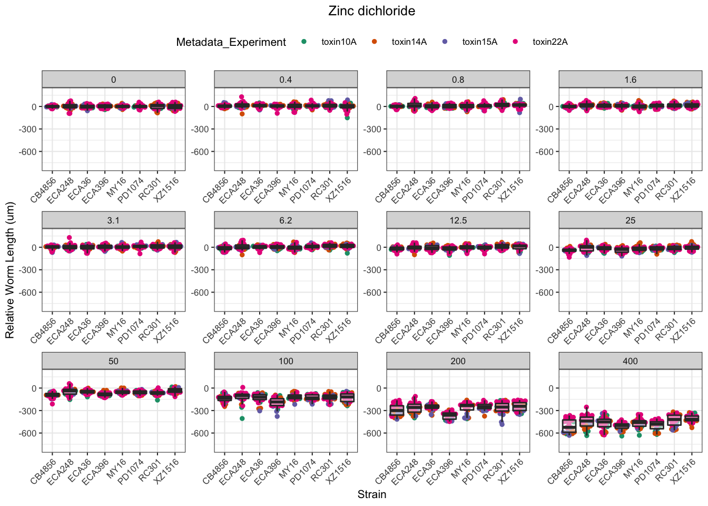

Pyraclostrobin


Aldicarb


Chlorfenapyr

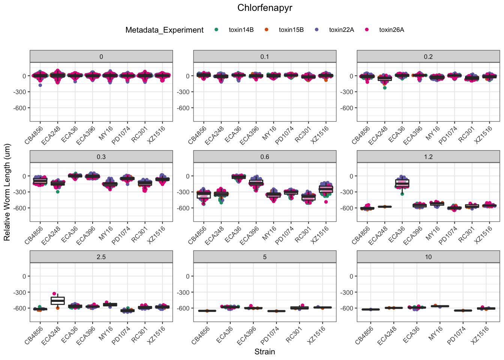

| Version | Author | Date |
|---|---|---|
| 8529055 | sam-widmayer | 2021-04-19 |
| bc5c5b5 | sam-widmayer | 2021-04-09 |
| 1f8d045 | sam-widmayer | 2021-04-07 |
| 0a1d24d | sam-widmayer | 2021-04-07 |
| 0e83f2b | sam-widmayer | 2021-03-24 |
| 02a633e | sam-widmayer | 2021-03-24 |
| deb1df5 | sam-widmayer | 2021-03-21 |
| 7ae886c | sam-widmayer | 2021-03-14 |
| cb6e132 | sam-widmayer | 2021-03-06 |
Methomyl


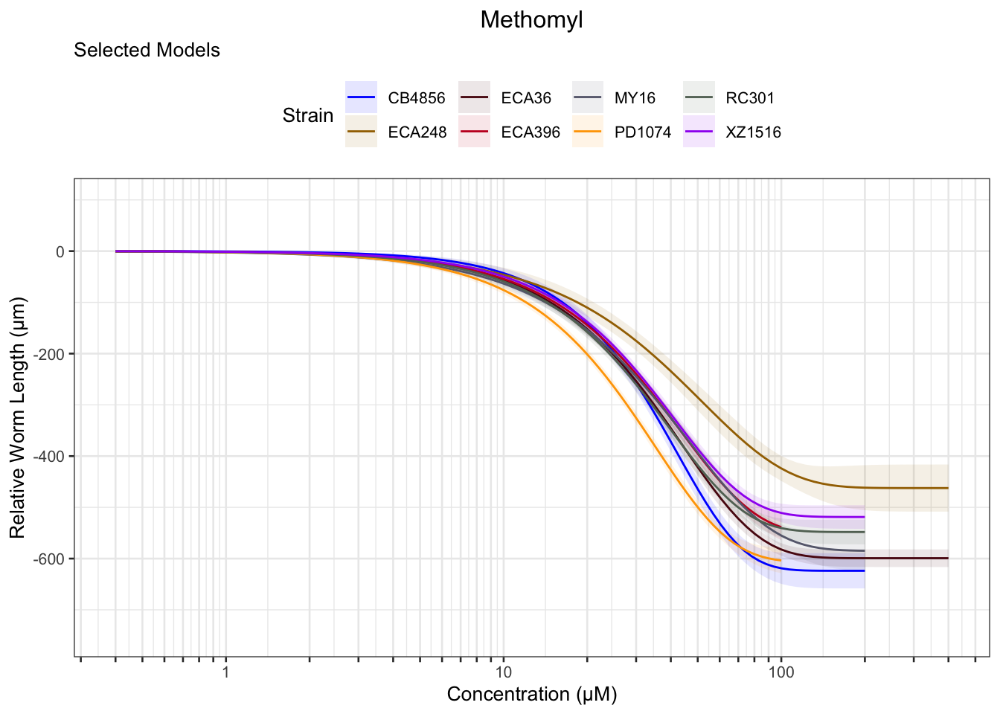
Methyl Mercury


Triphenyl phosphate


Arsenic trioxide


Carbaryl


Carboxin
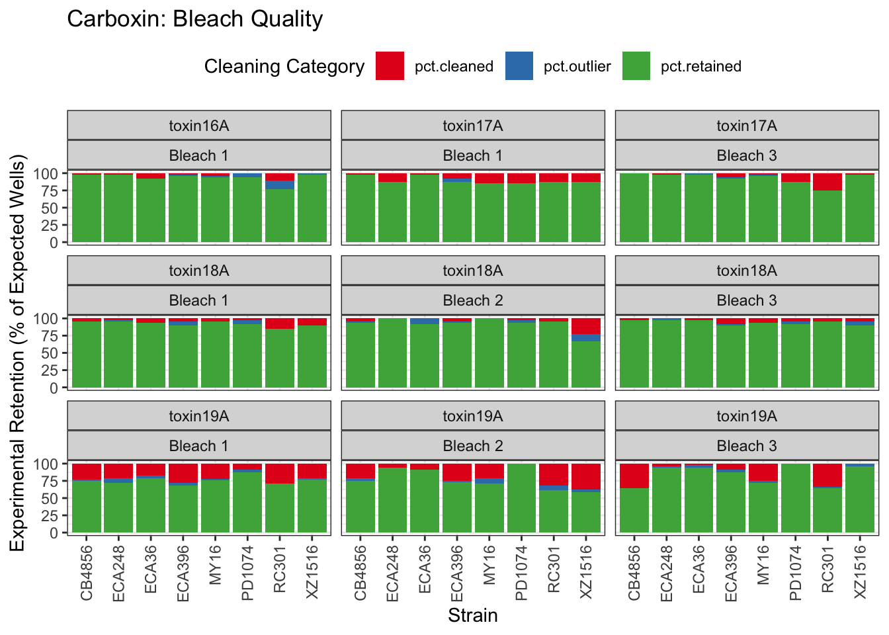


Chlorpyrifos
[1] "Excluding toxin17A: No Response"

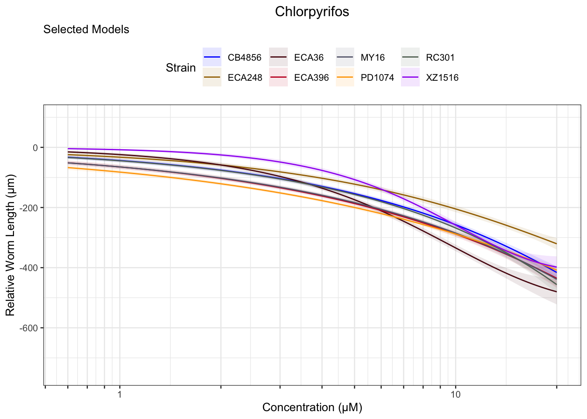
Lead (II) nitrate
%20nitrate-1.png)
%20nitrate-2.png)
%20nitrate-3.png)
Atrazine
[1] "Excluding toxin16A: Inaccurate Dilution Series"


2,4-D
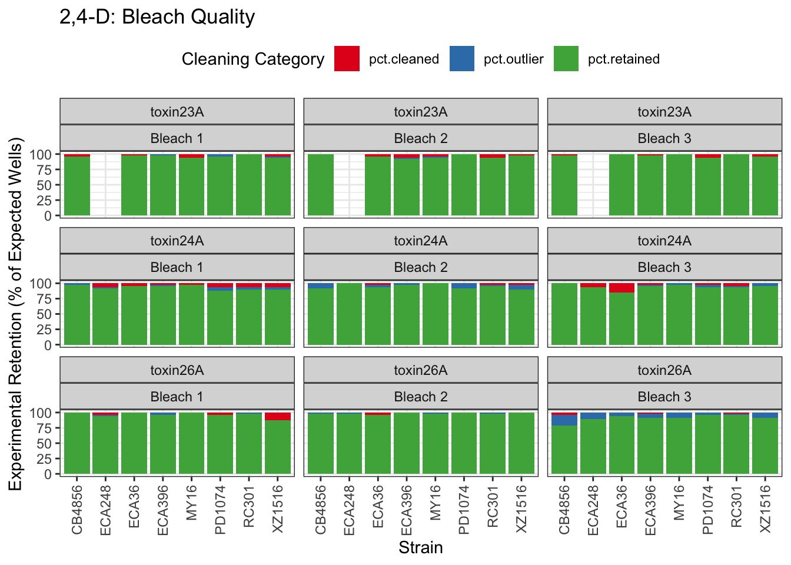

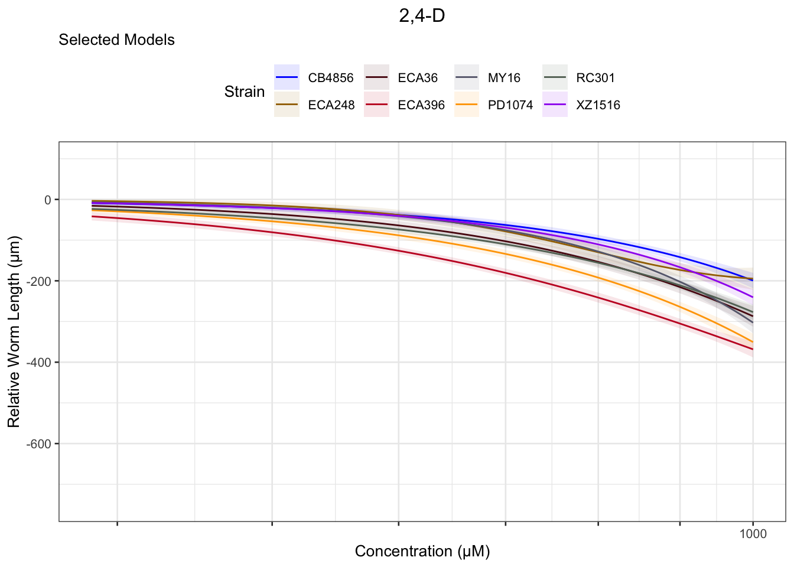
Malathion


Chlorothalonil

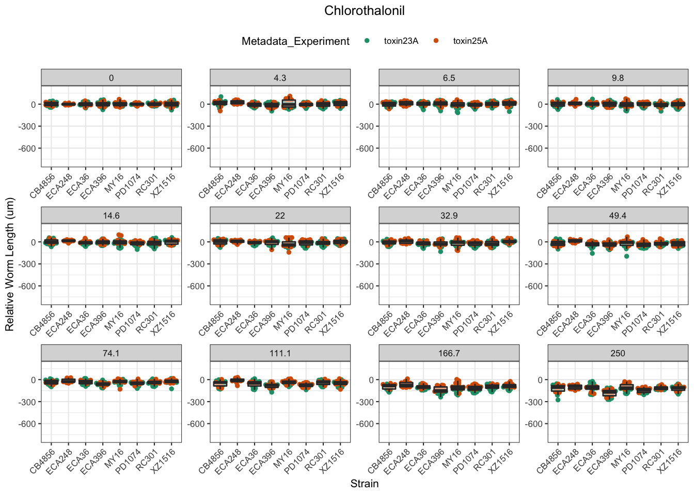
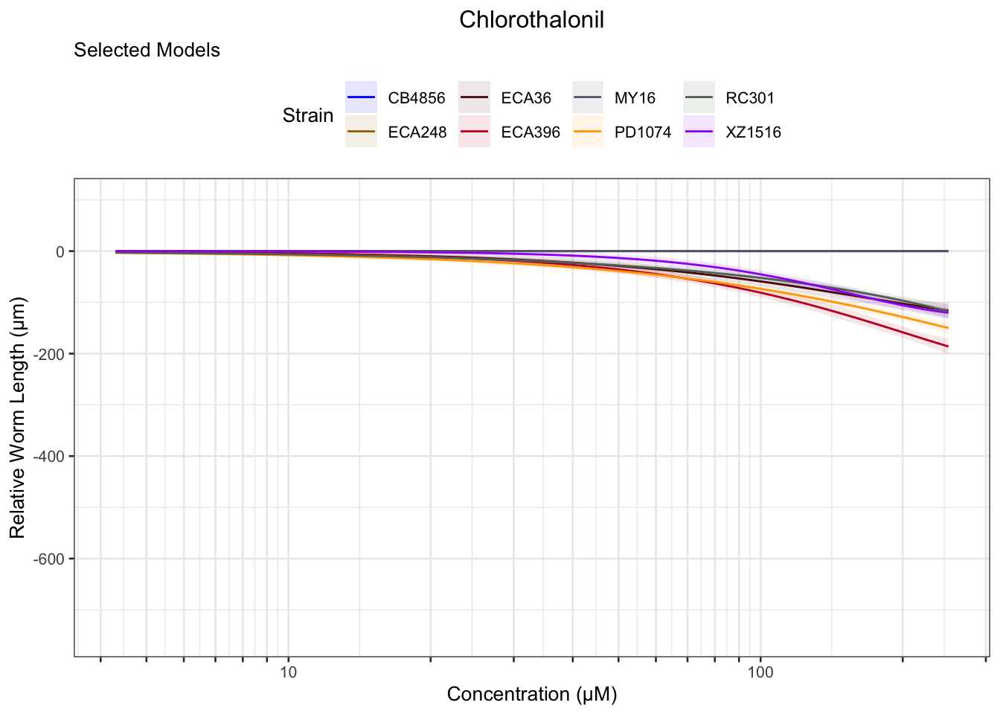
Deltamethrin

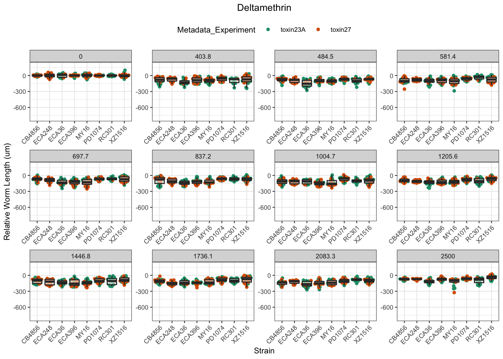
Error in optim(startVec, opfct, hessian = TRUE, method = optMethod, control = list(maxit = maxIt, :
non-finite finite-difference value [3]
[1] "Unable to optimize model"
[1] "Unable to optimize model"
Manganese dichloride
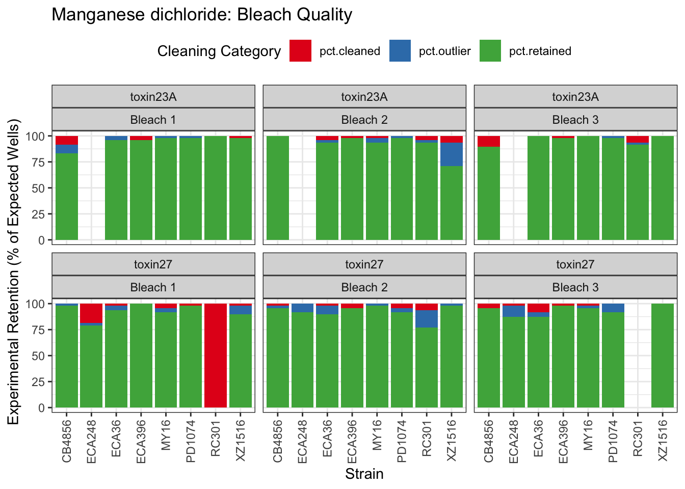

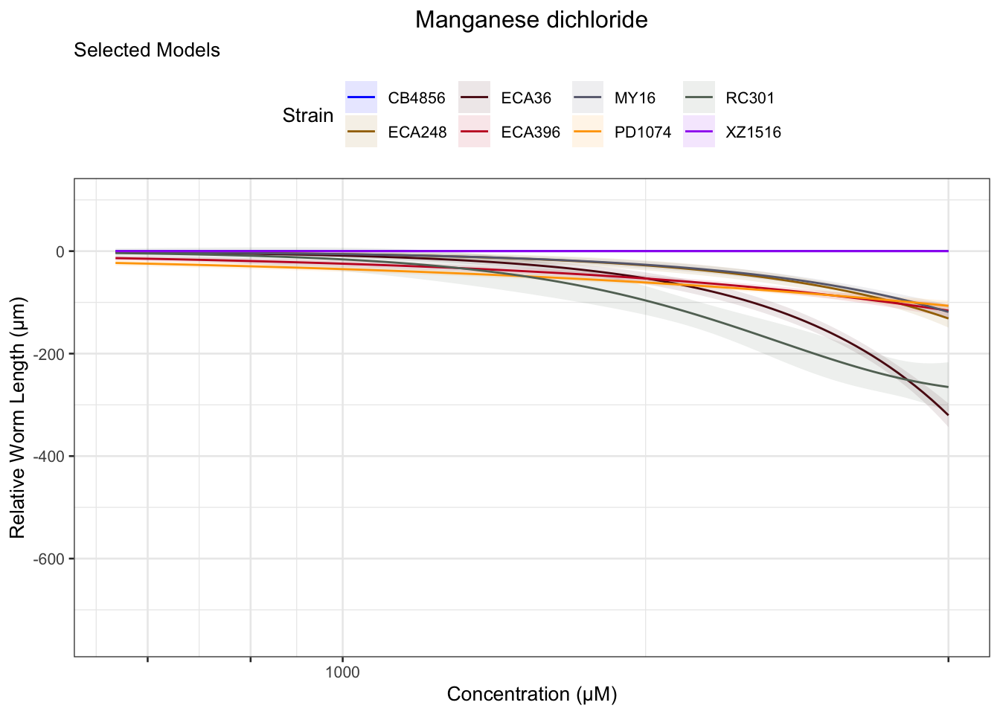
Propoxur


Mancozeb

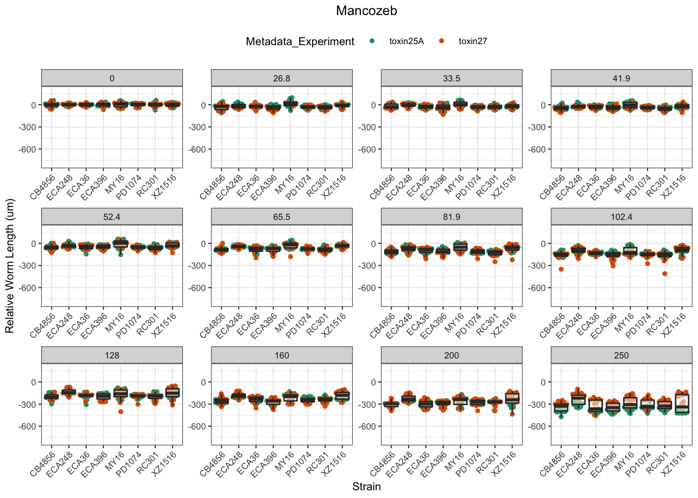
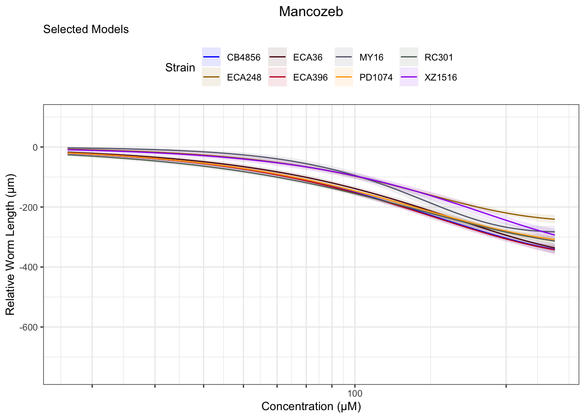
EC Estimates
EC10
EC50
EC90
Summary Tables
Toxicant Classes
sessionInfo()R version 4.0.4 (2021-02-15)
Platform: x86_64-apple-darwin17.0 (64-bit)
Running under: macOS Catalina 10.15.7
Matrix products: default
BLAS: /Library/Frameworks/R.framework/Versions/4.0/Resources/lib/libRblas.dylib
LAPACK: /Library/Frameworks/R.framework/Versions/4.0/Resources/lib/libRlapack.dylib
locale:
[1] en_US.UTF-8/en_US.UTF-8/en_US.UTF-8/C/en_US.UTF-8/en_US.UTF-8
attached base packages:
[1] stats graphics grDevices utils datasets methods base
other attached packages:
[1] ggrepel_0.9.1 ggbeeswarm_0.6.0 cowplot_1.1.1 RColorBrewer_1.1-2
[5] RCurl_1.98-1.2 ddpcr_1.15 kableExtra_1.3.4 knitr_1.31
[9] drc_3.0-1 MASS_7.3-53 easyXpress_0.1.0 forcats_0.5.1
[13] stringr_1.4.0 dplyr_1.0.4 purrr_0.3.4 readr_1.4.0
[17] tidyr_1.1.2 tibble_3.1.0 ggplot2_3.3.3 tidyverse_1.3.0
[21] workflowr_1.6.2
loaded via a namespace (and not attached):
[1] TH.data_1.0-10 colorspace_2.0-0 ellipsis_0.3.1
[4] rio_0.5.16 rprojroot_2.0.2 fs_1.5.0
[7] rstudioapi_0.13 farver_2.0.3 audio_0.1-7
[10] fansi_0.4.2 mvtnorm_1.1-1 lubridate_1.7.9.2
[13] xml2_1.3.2 codetools_0.2-18 splines_4.0.4
[16] readbitmap_0.1.5 jsonlite_1.7.2 broom_0.7.5
[19] dbplyr_2.1.0 png_0.1-7 compiler_4.0.4
[22] httr_1.4.2 backports_1.2.1 assertthat_0.2.1
[25] bmp_0.3 Matrix_1.3-2 cli_2.3.1
[28] beepr_1.3 later_1.1.0.1 htmltools_0.5.1.1
[31] tools_4.0.4 igraph_1.2.6 gtable_0.3.0
[34] glue_1.4.2 rebus.base_0.0-3 Rcpp_1.0.6
[37] carData_3.0-4 cellranger_1.1.0 jquerylib_0.1.3
[40] vctrs_0.3.6 svglite_2.0.0 xfun_0.21
[43] rebus.datetimes_0.0-1 openxlsx_4.2.3 rvest_0.3.6
[46] lifecycle_1.0.0 rebus.numbers_0.0-1 gtools_3.8.2
[49] zoo_1.8-8 scales_1.1.1 hms_1.0.0
[52] promises_1.2.0.1 sandwich_3.0-0 yaml_2.2.1
[55] curl_4.3 sass_0.3.1 stringi_1.5.3
[58] imager_0.42.7 highr_0.8 plotrix_3.8-1
[61] tiff_0.1-6 zip_2.1.1 bitops_1.0-6
[64] rlang_0.4.10 pkgconfig_2.0.3 systemfonts_1.0.1
[67] evaluate_0.14 lattice_0.20-41 labeling_0.4.2
[70] tidyselect_1.1.0 magrittr_2.0.1 R6_2.5.0
[73] generics_0.1.0 multcomp_1.4-16 DBI_1.1.1
[76] pillar_1.5.0 haven_2.3.1 whisker_0.4
[79] foreign_0.8-81 withr_2.4.1 rebus_0.1-3
[82] survival_3.2-7 abind_1.4-5 rebus.unicode_0.0-2
[85] modelr_0.1.8 crayon_1.4.1 car_3.0-10
[88] utf8_1.1.4 rmarkdown_2.7 jpeg_0.1-8.1
[91] grid_4.0.4 readxl_1.3.1 data.table_1.14.0
[94] git2r_0.28.0 reprex_1.0.0 digest_0.6.27
[97] webshot_0.5.2 httpuv_1.5.5 munsell_0.5.0
[100] beeswarm_0.2.3 viridisLite_0.3.0 vipor_0.4.5
[103] bslib_0.2.4